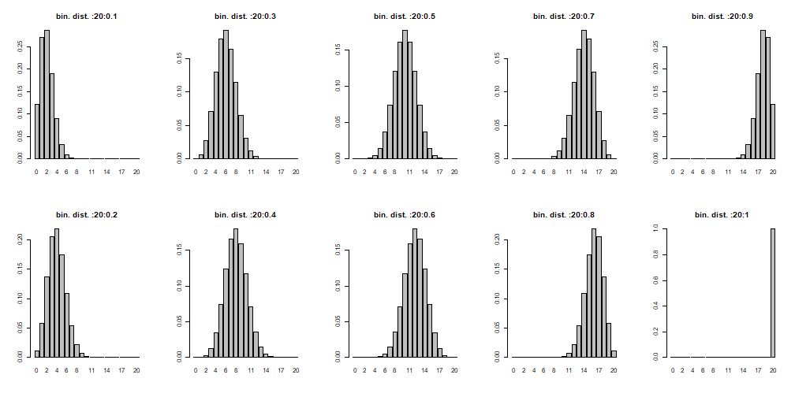
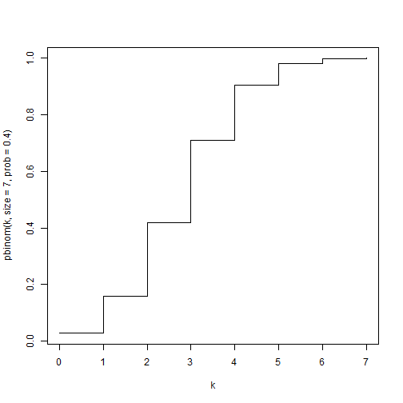
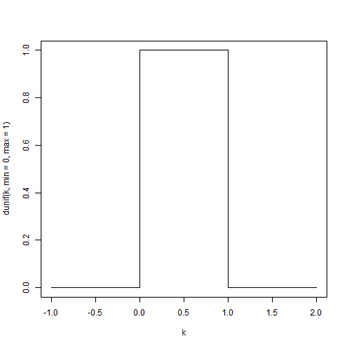
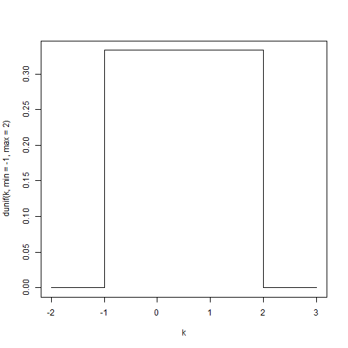
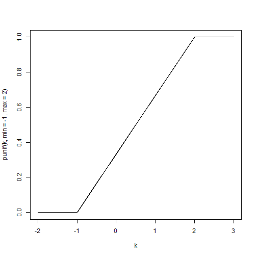
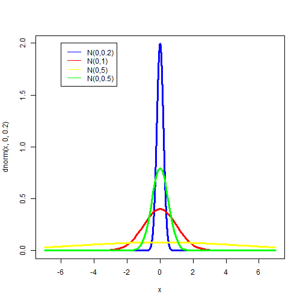
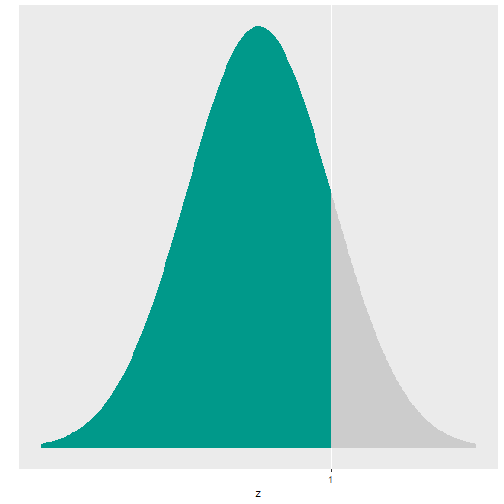
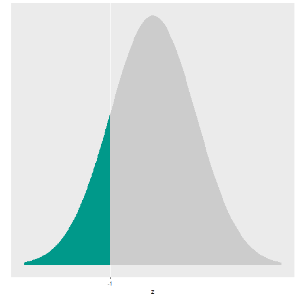

Random Variables Part 2
Adam J Sullivan
Assistant Professor of Biostatistics
Brown University
Random Variables
Shapes of Binomial
graph <- function(n,p){
x <- dbinom(0:n,size=n,prob=p)
barplot(x,names.arg=0:n,
main=sprintf(paste('bin. dist. ',n,p,sep=':')))
}
par(mfcol=c(2,5))
mapply(graph,20,seq(0.1,1,0.1))
Shapes of Binomial

## [,1] [,2] [,3] [,4] [,5] [,6] [,7] [,8] [,9] [,10]
## [1,] 0.7 0.7 0.7 0.7 0.7 0.7 0.7 0.7 0.7 0.7
## [2,] 1.9 1.9 1.9 1.9 1.9 1.9 1.9 1.9 1.9 1.9
## [3,] 3.1 3.1 3.1 3.1 3.1 3.1 3.1 3.1 3.1 3.1
## [4,] 4.3 4.3 4.3 4.3 4.3 4.3 4.3 4.3 4.3 4.3
## [5,] 5.5 5.5 5.5 5.5 5.5 5.5 5.5 5.5 5.5 5.5
## [6,] 6.7 6.7 6.7 6.7 6.7 6.7 6.7 6.7 6.7 6.7
## [7,] 7.9 7.9 7.9 7.9 7.9 7.9 7.9 7.9 7.9 7.9
## [8,] 9.1 9.1 9.1 9.1 9.1 9.1 9.1 9.1 9.1 9.1
## [9,] 10.3 10.3 10.3 10.3 10.3 10.3 10.3 10.3 10.3 10.3
## [10,] 11.5 11.5 11.5 11.5 11.5 11.5 11.5 11.5 11.5 11.5
## [11,] 12.7 12.7 12.7 12.7 12.7 12.7 12.7 12.7 12.7 12.7
## [12,] 13.9 13.9 13.9 13.9 13.9 13.9 13.9 13.9 13.9 13.9
## [13,] 15.1 15.1 15.1 15.1 15.1 15.1 15.1 15.1 15.1 15.1
## [14,] 16.3 16.3 16.3 16.3 16.3 16.3 16.3 16.3 16.3 16.3
## [15,] 17.5 17.5 17.5 17.5 17.5 17.5 17.5 17.5 17.5 17.5
## [16,] 18.7 18.7 18.7 18.7 18.7 18.7 18.7 18.7 18.7 18.7
## [17,] 19.9 19.9 19.9 19.9 19.9 19.9 19.9 19.9 19.9 19.9
## [18,] 21.1 21.1 21.1 21.1 21.1 21.1 21.1 21.1 21.1 21.1
## [19,] 22.3 22.3 22.3 22.3 22.3 22.3 22.3 22.3 22.3 22.3
## [20,] 23.5 23.5 23.5 23.5 23.5 23.5 23.5 23.5 23.5 23.5
## [21,] 24.7 24.7 24.7 24.7 24.7 24.7 24.7 24.7 24.7 24.7
Continuous Random Variables
- The actual definition of a random variable is:
A random variable in which the CDF is differentiable. It is possible for a finite set of points for where the CDF is continuous but not differentiable.
- What does this mean?
Binomial CDF
- Lets consider the Binomial CDF
k <- seq(0,7, by=0.0001)
plot(k,pbinom(k,size=7,prob=.4),type="l")
Binomial CDF
- Lets consider the Binomial CDF

Key Features
- CDF is a step function.
- This is due to the fact that it can only take on certain values.
- What does a continuous CDF look like?
Normal CDF
- Lets consider the Normal CDF
k <- seq(-4,4, by=0.0001)
plot(k,pnorm(k),type="l")
Differences
- CDF of normal is smooth
- This smoothness relates to the differentiable nature of it.
- This happens because the normal can take on an infinite number of points between any discrete value.
Continuous Random Variables
- We will consider the following in the course sequence:
- Uniform
- Normal
- t-distribution (Later during hypothesis testing)
- Exponential (1511/2511)
Uniform Distribution
- Uniform distribution is a specific distribution where all values have the same probability.
- Some call it a rectangular distribution
- To see why we will graph it.
Uniform Distribution
k <- seq(-1,2, by = 0.001)
plot(k, dunif(k, min=0, max=1), type="l")
Uniform Distribution

Further Uniform
k <- seq(-2,3, by = 0.001)
plot(k, dunif(k, min=-1, max=2), type="l")
Further Uniform

Is this really continuous?
- Look at the CDF

Properties of Uniform
- Uniform on (a, b)
- PDF \[f(x) = \dfrac{1}{b-a}, \text{ for } a\le x \le b\]
- Mean \[\dfrac{a+b}{2}\]
- Variance \[\dfrac{(b-a)^2}{12}\]
Why the Uniform?
- We use the uniform because each value has the same probability of occuring.
- This allows us to randomly pick uniform values for each person and then use those values for assignment.
- The uniform distribution also has a powerful feature.
- Any distribution can be constructed from a uniform.
- This means if we do not have a special R function, we can still use the uniform to create the distribution.
Normal Distribution
- Most of you know this as the Bell Shaped Curve.
- The most used distribution.
- Extremely important in all statistics.
Features of a Normal Distribution
- Symmetric about the mean.
- Mean and Median are equal.
Properties of a Normal Distribution
- Normal\((\mu, \sigma^2)\)
- PDF \[f(x) = \dfrac{1}{\sigma\sqrt{2\pi}} e^{\dfrac{-(x-\mu)^2}{2\sigma^2}}\]
- Mean \[\mu\]
- Variance \[\sigma^2\]
Normal PDF Plot
x <- seq(-7,7, by =0.001)
plot(x, dnorm(x, 0, 0.2), type="l", col="blue", lwd=3)
curve(dnorm(x, 0, 1.0), add=TRUE, col="red", lwd=3)
curve(dnorm(x, 0, 5.0), add=TRUE, col="yellow", lwd=3)
curve(dnorm(x, 0, 0.5), add=TRUE, col="green", lwd=3)
legend(-6,2,legend=c("N(0,0.2)","N(0,1)","N(0,5)", "N(0,0.5)"),lty=1,col=c("blue", "red",
"yellow", "green"))
Normal PDF Plot

Normal CDF Plot
x <- seq(-7,7, by =0.001)
plot(x, pnorm(x, 0, 0.2), type="l", col="blue", lwd=3)
curve(pnorm(x, 0, 1.0), add=TRUE, col="red", lwd=3)
curve(pnorm(x, 0, 5.0), add=TRUE, col="yellow", lwd=3)
curve(pnorm(x, 0, 0.5), add=TRUE, col="green", lwd=3)
legend(-6,1,legend=c("N(0,0.2)","N(0,1)","N(0,5)", "N(0,0.5)"),lty=1,col=c("blue", "red",
"yellow", "green"))
Normal CDF Plot

Why Normal?
- We will spend some time talking about this in the future, but it is the most important distribution you will learn about.
- Most of statistics that you will ever use are derived from this distribution.
Normal Distribution Probabilities

Interesting facts about Continuous Distributions.
- \(Pr(X=k)= 0\) for any \(k\)
- This is because a continuous distribution has an infinite number of points so the probability of any point is 0.
- CDF: \(Pr(X\le x)\)
- We use the CDF to help us understand probability ranges.
- Since we cannot calculate \(Pr(x=1)\), we may wish to calculate \(Pr(0.9\le X \le 1.1)\) instead.
Using CDF to calculate Probabilities
- If we wish to calculate the following: \[Pr(-1\le X \le 1)\]
- We can use the CDF, remember the CDF is of the form \(Pr(X\le k)\).
- \(Pr(X\le 1)\) is everything to the left of 1
- \(Pr(X\le -1)\) is everything to the left of -1
- This means \[Pr(-1\le X \le 1)=Pr(X\le 1) - Pr(X\le -1)\]
Visual Display
- \(Pr(X\le 1)\)

Visual Display
- \(Pr(X\le -1)\)

Visual Display
- \(Pr(X\le -1)\) and \(Pr(X\le 1)\)